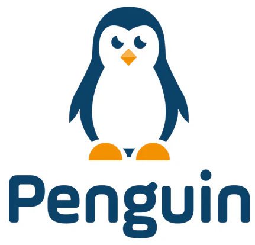

زيارات المبيعات
جاري التحقق...

⏳
جاري التحقق
لحظة واحدة...
📍
الوقت الحالي
--:--
🕐
الموقع الحالي
جارٍ تحديد الموقع...
📍
📍 جارٍ تحميل الخريطة...
✓
وقت البدء
--:--
🕐
الموقع
—
📍
الزيارة نشطة الآن
يرجى تذكر إنهاء الزيارة عند الانتهاء.🛡️
تنبيه ⚠️
إبلاغ المشرف
👤
تسجيل حسابك
تم التعرف على حساب تيليجرام الخاص بك، ولكن لم يتم العثور عليه في نظام الموظفين.
👤
اسم المستخدم مطلوب
يجب أن يكون لديك اسم مستخدم في تيليجرام حتى يمكن استخدام النظام.
لإنشاء اسم مستخدم:
1. افتح إعدادات تيليجرام.
2. افتح ملفك الشخصي أو تعديل الملف الشخصي.
3. اختر Username.
4. اختر اسماً فريداً واحفظه.
1. افتح إعدادات تيليجرام.
2. افتح ملفك الشخصي أو تعديل الملف الشخصي.
3. اختر Username.
4. اختر اسماً فريداً واحفظه.
⏸️
الحساب غير مفعل
حسابك موجود في النظام ولكنه غير مفعل حالياً.
🤖
تفعيل البوت مطلوب
حتى نتمكن من إرسال التنبيهات وإشعارات الحضور لك، يجب تفعيل البوت.
خطوات التفعيل:
1. اضغط على زر "فتح البوت" بالأسفل.
2. اضغط على Start (بدء) أو Restart (إعادة تشغيل) في المحادثة.
3. عُد إلى هنا واضغط "لقد قمت ببدء البوت".
1. اضغط على زر "فتح البوت" بالأسفل.
2. اضغط على Start (بدء) أو Restart (إعادة تشغيل) في المحادثة.
3. عُد إلى هنا واضغط "لقد قمت ببدء البوت".